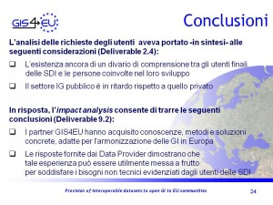
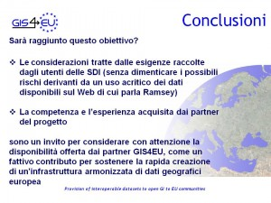

5 marzo, 2014 | di Sergio Farruggia
“Nella new economy […] il <<lavoro programmabile>> è una dote fondamentale, allo stesso tempo personale e organizzativa. Proprio in questa nuova concezione delle risorse umane alcuni ravvisano la vera ragione della recente affermazione delle donne. La tradizione patriarcale ha fatto sì che gli interessi maschili si focalizzassero sulle attività più materiali. Le donne sono state portate, dunque, dall’evoluzione a potenziare altre qualità, come la capacità di stabilire rapporti interpersonali e quella di prevedere il futuro, riuscendo a fronteggiare situazioni incerte e a risolvere ogni problema.” (M. Castells, La Città delle Reti, Marsilio 2004, p. 41)
 Ogni tempo propone all’umanità la possibilità di migliorarsi, sia come collettività, sia come individui. L’Età dei Lumi ci ha lasciato così in eredità i principi morali per rigettare le pratiche sociali dello schiavismo e della pena di morte, prima di allora considerate lecite, nell’interesse del bene comune (sic!).
Lo sviluppo della Società dell’Informazione si accompagna a progressi dell’etica, occupandosi dei fini sociali da raggiungere, che sono ancora e sempre il perfezionamento dell’individuo e il bene comune. Così, si riaffrontano oggi problematiche antiche perché ritornate urgenti in conseguenza della globalizzazione (vedi nuove forme di schiavitù) o perché maturano nuove consapevolezze, come il riconoscimento delle pari opportunità tra i sessi, assunto come paradigma, cui fare riferimento per ogni azione che riguardi tutti gli ambiti politici, economici e sociali.
Il principio, universalmente espresso come Gender Mainstreaming, è rivoluzionario. Esso aspira a rendere generale il principio di non discriminazione, perciò garantito non solo da leggi mirate ma dalla sua assimilazione sistematica in tutte le politiche pubbliche. La strategia per il suo adempimento presuppone quindi attività sia preventive rispetto al verificarsi di situazioni potenzialmente discriminatorie, sia di tipo proattivo, nel senso che la sua realizzazione richiede un atteggiamento positivo della pubblica amministrazione e della società tutta. Pertanto, come corollario, il Mainstreaming, implica un approccio che integri progettazione, attuazione, monitoraggio e valutazione di politiche e programmi, in tutti gli ambiti della vita sociale.
Una società in cui donne e uomini condividono la conoscenza e la consapevolezza di questo paradigma è sicuramente orientata e facilitata al miglioramento di sé stessa, impedisce che le diseguaglianze si perpetuino e valorizza –attraverso un approccio pluralistico- la diversità di genere.
In tale quadro, la new economy, richiedendo anche nuove competenze e nuove attitudini, più diffuse nel mondo femminile, come osserva il sociologo spagnolo, contribuisce a colmare le diseguaglianze che la società ancora riserva alle donne.
Recentemente, ha richiamato la mia attenzione questo titolo: “Does SDI need a gender dimension?“, uno speech presentato nella sessione “Education and Capacity Building” della XIII Conferenza Global SDI, Quebec 2012. Incuriosito, ho aperto l’abstract qui, quindi le slide, ancora qui.
La documentazione disponibile riferisce di un‚Äôindagine su aspetti di genere riguardanti il settore delle Spatial Data Infrastucture, SDI, (in Italia chiamate: Infrastrutture di Dati Territoriali; sono l’evoluzione “digitale” degli organismi cartografici),¬† vale a dire la partecipazione delle donne all‚Äôinterno di questa comunit√† internazionale e il contributo che le SDI forniscono alla comprensione dei problemi che investono le donne di tutto il mondo.
Gli autori sono due ricercatrici Colombiane, Nancy Aguirre e Lilia Patricia Arrias, insieme a Santiago Borrero, Segretario Generale dell’Istituto Panamericano di Geografia e Storia, IPGH. Nancy è una geografa e, tra l’altro, attualmente è l’editor della versione dedicata all’area regionale America Latina e Area Caraibica della Newsletter dell’Associazione Global SDI. Lilia, all’epoca di questo lavoro, ricopriva la carica di vice-presidente dell’International Geospatial Society, IGS. 
Lo studio ha considerato l’intero contesto mondiale (in realtà, non sono menzionati Paesi del Continente asiatico), provvedendo alla raccolta d’informazioni sul tema attraverso interviste con domande aperte ed eseguendo un sondaggio sulle tematiche di genere delle SDI, rivolto sia a organizzazioni leader del settore, sia singoli addetti, di entrambi i sessi.
Anche se i risultati ottenuti tramite l’esame dei dati raccolti, come gli stessi autori hanno tenuto a precisare, siano da considerare frutto di un’indagine preliminare, la cui metodologia meriti di essere affinata, il lavoro pone in evidenza almeno due aspetti interessanti.
Prima di tutto, anche il settore della Geo-ICT non è estraneo alla contraddizione che la rivoluzione digitale sta mettendo in risalto, quella tra il bisogno di competenze soft, cioè non tecniche (hard) di cui il genere femminile è portatore e il rischio che la stessa rivoluzione amplifichi l’ineguaglianza di genere, senza distinzioni tra classi sociali e di reddito. Eppure, le informazioni raccolte dagli autori confermano che una presenza bilanciata dei due sessi all’interno della comunità delle SDI, nell’ambito della produzione dei dati e dei processi decisionali rilevanti rispetto alle esigenze delle utilizzatrici delle SDI stesse, può essere fondamentale per promuovere l’uguaglianza di genere, l’emancipazione delle donne e –in definitiva- la costruzione di una Società dell’Informazione veramente per tutti.
Il secondo aspetto trae spunto dalla considerazione che le SDI hanno come fine ultimo quello di contrastare le conseguenze -sia a livello globale, sia locale- dei maggiori problemi della nostra epoca, come il cambiamento climatico, la crescita della popolazione, la globalizzazione economica e i problemi associati all’inquinamento dell’ambiente, il depauperamento delle risorse naturali. Ciò nonostante, è assai poco frequente annoverare tra gli obiettivi alla base dello sviluppo delle SDI temi riguardanti esplicitamente problematiche che investono le donne. Eppure, osservano gli autori, la soluzione del divario di genere è fortemente connesso –ad esempio- al tema dello sviluppo dell’agricoltura o della sicurezza alimentare; e la maggior parte, se non tutti, gli Obiettivi di Sviluppo del Millennio dell’ONU sono esplicitamente “gender-oriented”. Lo studio effettuato conferma che le SDI potrebbero supportare l’integrazione, nelle diverse politiche, delle problematiche riguardanti le pari opportunità.
E in Italia? Anche la comunità delle SDI italiane necessita di una “dimensione di genere”?
L’attenzione verso queste tematiche, secondo il concetto di Gender Mainstreaming, non è del tutto assente all’interno della comunità delle SDI italiana: si veda questo esempio. Un altro indizio è fornito proprio dal lavoro testé descritto: scorrendo le slide si evince che almeno una (uno, o più?) rappresentante della comunità italiana ha collaborato con gli autori alla raccolta dei dati, compilando il questionario oppure rispondendo all’intervista.
Esplorare le questioni di genere nel contesto della comunità geomatica nazionale, prendendo ispirazione -ad esempio- dal lavoro eseguito dalle ricercatrici colombiane, potrebbe essere utile per dare nuovi impulsi al processo di sviluppo delle SDI nel nostro Paese.
Non mancano ragioni per provarci.
Rispetto al contesto generale dell’ICT, per il settore Geo-ICT si riscontra un più accentuato gap tra potenzialità d’innovazione e capacity building -degli addetti ai lavori e degli stakeholder- necessaria per sfruttarne le opportunità. La caratterizzazione della comunità SDI nazionale rispetto al genere potrebbe evidenziare aspetti utili per comprendere questa discrepanza e indicare circostanze favorevoli per attenuare tale carenza e, nello stesso tempo, contribuire a contenere fenomeni di digital divide di genere.
L‚Äôiniziativa, contribuendo ad accrescere la consapevolezza sulle problematiche di genere specifiche nell‚Äôambito della comunit√† delle SDI italiane, pu√≤ anche offrire occasioni per diffondere le tematiche riguardanti la crescita di una societ√† spatially enabled, cio√® in grado di usare i dati geografici come ‚Äúbene comune‚Äù per stimolare l’innovazione. A questo riguardo, un ruolo fondamentale pu√≤ svolgerlo la Rete Women for Intelligent and Smart TERritories, WISTER, costituitasi all‚Äôinterno degli Stati Generali dell‚ÄôInnovazione, per ‚Äúpromuovere politiche dell‚Äôinnovazione sensibili alle differenze, a partire da quelle di genere‚Äù.¬†Contribuire all‚Äôalfabetizzazione sui geo-dati digitali, formare cittadini (di entrambi i generi) ‚Äúspatially literate‚Äù, √® la condizione necessaria per promuovere le SDI anche in Italia come strumento di supporto per la diffusione del Gender Mainstreaming.
A questo riguardo la redazione di TANTO, Stati Generali dell’Innovazione e la rete WISTER (ma chiunque vorrà contribuire sarà benvenuto) si augurano con questo post di stimolare una discussione sul tema affrontato, aperta alla comunità degli innovatori, donne e uomini, ovviamente.
Ecco qualche spunto, per avviare il dialogo:
- Ritieni che nell’ambito del settore della Geo-ICT esistano problematiche riguardanti aspetti di genere?
- Pensi che un’indagine sugli aspetti di genere possa essere utile per il settore delle SDI e -in generale- possa contribuire nella promozione dell’innovazione nel nostro Paese?
- Ci sono problematiche che vorresti già segnalare perché siano considerate in un’eventuale indagine?
- Qualora l’iniziativa riscontrasse il favore dei lettori, vorresti avere voce in capitolo nella stesura del questionario?
Siete invitati tutti a spargere la voce: segnalate questa proposta, suggerendo ‚Äìse lo ritenete- di lasciare un commento, una testimonianza, qui di seguito o anche usando l’hashtag #gendergeo.
Ringraziamo in anticipo tutti coloro che ci aiuteranno a diffondere questo post.
Posted in Entropia | 10 Comments »
3 maggio, 2010 | di Sergio Farruggia
“I vostri dati fanno schifo” di Pietro Blu Giandonato è caduto a fagiolo proprio mentre stavo riflettendo su come concludere il mio intervento inserito in scaletta al convegno ”La condivisione dei dati geografici in Europa”. Troverete tutte le informazioni riguardanti questa iniziativa  sul sito istituzionale del progetto GIS4EU, qui. Da questo indirizzo  si può inoltre accedere ai documenti riguardanti l’attività svolta.
Ipotizzo che il lettore interessato sia andato a dare una sbirciatina sul sito ed abbia letto di cosa si è occupato questo progetto. Per i più pigri traduco così: “Proviamo a vedere cosa significa e cosa comporta applicare le regole della direttiva INSPIRE ai dataset esistenti”.
Ciò premesso, posso entrare nel merito dell’argomento che mi era stato affidato, cioè la prospettiva degli utenti sulle SDI: dall’analisi delle esigenze all’utilizzo dei risultati.
In sintesi, si è trattato di esporre  i risultati di due analisi effettuate nel corso del progetto. La  prima ha riguardato l’individuazione dei bisogni degli utenti di un’Infrastruttura di Dati Territoriali, lavoro svolto nella fase iniziale del progetto. La seconda indagine ha inteso raccogliere informazioni relative all’impatto dei risultati del progetto, coinvolgendo i partner con un ruolo di produttori e fornitori di geodati, ovvero gestori di una SDI.
Ho riassunto l’esito di queste indagini nella slide riportata qui a fianco. Per quanto riguarda i bisogni degli utenti di una SDI, oltre alle esigenze di carattere tecnico (requisiti di standardizzazione e armonizzazione dei dati nonché indicazioni per migliorare i servizi di fruizione dei dati stessi) sono emerse esigenze non tecniche, come il miglioramento delle modalità di comunicazione e di dialogo tra data provider e utenti, la riduzione dei vincoli per l’accesso ai dati, il miglioramento della gestione dei metadati, l’aggiornamento più frequente dei dati, politiche di accesso (licenze e prezzi) ai dati minori (in numero) e più chiare.  E’ stata anche indicata la necessità di debellare il digital divide esistente all’interno delle pubbliche amministrazioni tra addetti ai lavori e chi ha ruoli di decision maker. Risultato in qualche modo scontato: i limiti segnalati contribuiscono a penalizzare i contenuti di origine pubblica ed il loro impiego per tante applicazioni consumer, ma non solo.
Meno prevedibile il risultato della valutazione che i data provider coinvolti in GIS4EU hanno espresso nei confronti dell’esperienza sviluppata e dei risultati conseguiti. In generale, la metodologia individuata per rendere fruibili i propri dataset secondo le regole INSPIRE è ritenuta adeguata allo scopo. Sussistono sicuramente problematiche legate ai costi della sua applicazione, in particolare, costi da sostenere per la formazione del personale (ad es. per fare propria la complessa documentazione tecnica e mantenersi aggiornati) e per adeguamenti organizzativi: ma è anche ragionevole supporre che questi decresceranno nel tempo, potendo anche immaginare una sempre maggiore diffusione, assimilazione e condivisione delle conoscenze essenziali nel mondo della geomatica. E’ stato certamente incoraggiante –rispetto al punto di vista degli utenti- rilevare che il processo GIS4EU è ritenuto utile per favorire la fruibilità dei dati, soprattutto grazie al miglioramento della compatibilità tra dataset, alla disponibilità di data model ed al salto di qualità nella possibilità di condividere fonti di origine differente. I tecnici interpellati, sollecitati a fornire indicazioni sugli effetti dell’esperienza acquisita secondo diversi aspetti (rispetto alle ricadute operative per le organizzazioni, al valore sociale, a quello strategico e politico), hanno comunque  sempre rimarcato –tra i diversi motivi di miglioramento indotti da GIS4EU-  la capacità di comunicazione e l’adozione di modalità di collaborazione in rete.
In conclusione: i risultati di GIS4EU possono concorre a soddisfare i bisogni degli utenti delle SDI.  Quindi, come evitare che questo risultato si dissolva, come valorizzare l’esperienza acquisita?
E’ stato chiesto ai Data Provider di esprimersi anche riguardo ad una disponibilità per assistere eventuali SDI interessate ad applicare il processo GIS4EU ai propri dataset. L’esito è stato tradotto in termini di “visione”, utile per orientare le persone coinvolte e per comunicare questo proposito anche a progetto terminato.
 L’obiettivo dei partner è quello di  “Supportare la più attiva ed efficiente cooperazione tra i fornitori di geodataset, gli enti cartografici e altri gestori di dati geografici, nonché per offrire proposte e fornire piani per sostenere la rapida creazione di un’infrastruttura armonizzata di dati geografici europea”.
L’obiettivo dei partner è quello di  “Supportare la più attiva ed efficiente cooperazione tra i fornitori di geodataset, gli enti cartografici e altri gestori di dati geografici, nonché per offrire proposte e fornire piani per sostenere la rapida creazione di un’infrastruttura armonizzata di dati geografici europea”.
Ma sarà raggiunto questo obiettivo?  Certamente i dati e l’informazione geografica sono di grande interesse, nei più diversi campi, e i produttori di  dati sono un riferimento indispensabile per tanti operatori … e sulla Rete si trovano tanti dati … ma… Ecco, qui Pietro Blu mi è venuto in aiuto: segnala l’avvertimento di Paul Ramsey di OpenGeo recentemente lanciato al congresso Where2.0.
dati sono un riferimento indispensabile per tanti operatori … e sulla Rete si trovano tanti dati … ma… Ecco, qui Pietro Blu mi è venuto in aiuto: segnala l’avvertimento di Paul Ramsey di OpenGeo recentemente lanciato al congresso Where2.0.
Già, crediamo alle mappe e spesso le prendiamo come oro colato. Attraverso di esse produciamo altre informazioni, senza prendere alcuna precauzione. La conclusione di Ramsey è perentoria: “Produttori  di dati controllate se e perché i vostri dati ‘fanno schifo’ e ditelo ai vostri utenti”.
L’impegno profuso durante questo biennio da tanti esperti GI, di SDI nazionali, regionali e  locali, di diverse nazioni europee può essere raccolto per affermare: “I nostri dati saranno affidabili!”.
Perché prima dell’avvento del computer, il mercato “mapping” aveva caratteristiche affatto differenti ed al prodotto cartaceo si poteva anche perdonare d’invecchiare per anni prima di essere sostituito da una nuova edizione. Non è più così. Ma il mutamento del contesto comporta anche nuovi problemi: Ramsey dixit! Soprattutto: nessun ente cartografico o sistema informativo geografico può ormai lavorare da solo!
Per il settore pubblico questa √® un‚Äôopportunit√† da cogliere al volo. Quanto ho imparato partecipando a questo progetto e quanto ho ascoltato dai relatori dell‚Äôincontro genovese va proprio nella direzione che segnalavo di ritorno dalla Global SDI Conference di Rotterdam, l‚Äôanno passato: ¬†‚ÄúLe SDI nascono e stanno crescendo pi√π rapidamente, armoniosamente ed hanno maggior successo -cio√® soddisfano i bisogni degli utenti (e sono loro a dichiararlo!)- dove √® maggiore l’attitudine alla collaborazione, la cooperazione tra istituzioni‚Äù.
Non si può, non si deve interrompere la strada intrapresa.
Un cammino che dovrà essere percorso insieme: da soggetti pubblici, privati, del mondo della ricerca, come GIS4EU ha dimostrato. Valorizzando le comunità e le aggregazioni di singoli, come stiamo imparando nel word wide web.
D’altro canto –mi son chiesto- perché  il direttore di OSGeo si è scatenato con un intervento “a gamba tesa” nell’arena più eterodossa ma anche più creativa della comunità IG internazionale?
Posso sbagliarmi, ma credo che ci sia lo zampino di questa norma:¬† Open Government Directive (OGD, 12/2009). Le parole d‚Äôordine su cui si basa sono:¬† trasparenza, partecipazione e collaborazione (anche in Italia s‚Äôinizia a parlarne: a me, per esempio, √® piaciuto questo). Mi pare che la ‚Äúprovocazione‚Äù ¬†di Paul voglia andare a¬†parare l√¨, come dire: ‚ÄúIl futuro √® l’OGD ed io ho la soluzione per aiutarvi ad implementare i suoi principi‚Äù.¬† Leggo appunto, visitando il sito di OpenGeo, che propongono una soluzione per aiutare l‚Äôimplementazione di questi tre principi: “OpenGeo Suite software is standards compliant, fostering collaboration that encourages partnerships and promotes cooperation within the Federal Government, across levels of government, and between governments and private institutions‚Äù. Questa √® l‚Äôevoluzione dell‚ÄôOpen Source: TANTO se n‚Äô√® interessato qui. Cio√® si avvera quanto scriveva T. L. Friedman (Il Mondo √® Piatto, Mondadori 2006, pag. 116) soltanto pochi anni fa: ‚ÄúCon¬† il tempo, vedremo emergere un nuovo equilibrio all‚Äôinterno del quale tutte le differenti forme di software troveranno la propria collocazione: il tradizionale software commerciale, in stile Microsoft o SAP, insieme al modello Business web del software in affitto, in stile Salesforce.com, e al software libero prodotto o da comunit√† finanziate o da individui ispirati‚Äù.
Le SDI saranno conformi ai principi dell’Open Government Directive; formeranno reti cooperative di SDI, sapranno essere aggregatrici di conoscenze e competenze, guarderanno alla tecnologia come contenitore di soluzioni per le proprie esigenze e i propri obiettivi, senza preconcetti “ideologici”, consapevoli della complessità sempre crescente e dei ritmi di obsolescenza a cui sono soggette. E’ per questo che garantiranno dati affidabili.
Posted in News | 4 Comments »
8 luglio, 2009 | di Sergio Farruggia
Qui un resoconto “soggettivo” della XI Conferenza GSDI. La prossima edizione si svolger√† a Singapore dal 18 al 22 ottobre 2010. Poi, chiss√† … un anno … o un altro…
Ho avuto la fortuna di poter partecipare all’undicesima edizione della Conferenza mondiale dell’associazione Global Spatial Data Infrastructure (GSDI), che si √® svolta a Rotterdam (NL) dal 15 al 19 giugno scorsi. Finora non ho trovato sui geoportali e sui geo-blog della geo-comunit√† italiana notizie o commenti riguardanti questo evento. Mi pare un peccato: per me √® stata un’esperienza veramente istruttiva. Tutte le sessioni alle quali ho partecipato mi hanno fornito dati, idee e in generale un’ampia visione delle sfide che attendono la GI nei prossimi anni. Il programma della conferenza lo si pu√≤ recuperare qui.
La Geographical Information √®, tra i settori dell’ICT, quello che certamente sta guardando alla crisi economica in atto con un approccio particolarmente proattivo e si propone di individuare e proporre soluzioni innovative per superare questa impasse, contribuendo a costruire nuovi modelli sociali e nuove realt√† economico-finanziarie. Una comunit√† formata da tecnici, scienziati, addetti della pubblica amministrazione che in questo frangente ha immediatamente orientato l’attenzione sull’aspetto che pi√π le √® congeniale: il nostro Pianeta, come microscopica particella immersa nell’immenso Universo. Dentro questa ampolla completamente sigillata dal resto del creato sono costretti a vivere oltre sei miliardi di esseri umani; e saranno obbligati a viverci altri miliardi di persone: i nostri figli, i nostri nipoti e pronipoti. Ma non √® un interesse denotato da catastrofismo, visioni apocalittiche o esaltazioni per un ‚Äúritorno al passato‚Äù, bens√¨ consapevole che ci si sta offrendo un’opportunit√† epocale: essere attori di una trasformazione che i posteri potrebbero identificare e riconoscere come l’inizio di una nuova era, quali furono il Rinascimento o la Rivoluzione Industriale.
Emblematico il titolo assegnato per questa edizione della Conferenza: Spatial Data Infrastructure Convergence: Building SDI Bridges to address Global Challanges, come dire: ‚ÄúLe convergenze verso l’Infrastruttura di Dati Geografici: Gettare ponti di Informazioni Geografiche per affrontare le sfide globali‚Äù, che ha visto la partecipazione di pi√π di 1500 esperti, provenienti da tutto il mondo.
Cercher√≤ di trasmettere qualche briciola di quanto ho raccolto, focalizzando l’attenzione sulle Sessioni Parallele che ho seguito. Ho necessariamente dovuto fare delle scelte: per tutte le sessioni ho quasi tirato a sorte per decidere verso quale aula dirigermi e non so se -a conti fatti- ho sempre agito per il meglio. Chi fosse interessato ad approfondire, trover√† almeno gli abstract degli interventi nel programma pubblicato sul sito dell’associazione.
Essendo coinvolto nel progetto eSDI-Net+ non potevo non partecipare ai due workshop organizzati da questa rete europea, creata per promuovere lo sviluppo delle SDI in ambito europeo e favorire lo scambio di esperienze e buone pratiche. Posso riferire che i contributi italiani -sintetizzabili nell’impegno di diversi enti pubblici, prevalentemente regionali- su differenti tematiche come il supporto per la definizione e la sperimentazione delle INSPIRE Data Model Specifications (progetto GIS4EU e NATURE-SDIplus) o la definizione di una infrastruttura europea degli indirizzi (EURADIN) sono stati veramente apprezzati. Approfitto per segnalare il prossimo evento pubblico organizzato da eSDI-Net+: l’SDI Best Practice Award che, non a caso, si svolger√† in Italia, precisamente a Torino, il 26-27 novembre prossimi.
La curiosit√† mi ha portato a seguire la sessione Mash-up the SDI (nel mio piccolo qualcosa sull’argomento avevo scritto qui). Ho potuto assistere al confronto tra due qualificati rappresentanti delle due ‚Äúvisioni‚Äù, quella che potremmo chiamare della ‚ÄúCartoteca Digitale Universale‚Äù rappresentata da Peter ter Haar, direttore Prodotti dell’ Ordnance Survey, e quella ‚Äúevoluzionistica‚Äù, sostenuta, in quella sede da Ed Parsons di Google (e da chi se no!). L’impressione che ne ho tratto, anche per via degli interventi di alcuni presenti in sala, √® che vi sia molta attenzione degli uni per gli altri, voglia di confrontarsi, di prendere spunti dalle reciproche ‚Äúfilosofie‚Äù e, come dimostrano alcune recenti scelte dell’OS, di passare dalle teorie al concreto. Qualcosa si sta muovendo anche in Italia (Ricordate?). Nello stesso orario, giusto per dare un’idea di cosa ho perso, si svolgeva la sessione Service Oriented Architetture and Web Services: peccato! Per fortuna il programma riporta i paper dei principali interventi succedutisi.
Seguendo un filo logico avrei forse dovuto recarmi poi alla seguente sessione: Metadata in action. Avrei ascoltato anche un intervento riguardante l’esperienza italiana legata ai programmi del Ministero dell’Ambiente (disponibile l’articolo, sempre accendendo al programma della Conferenza). Invece, mi sono lasciato ammaliare da un titolo intrigante Volunteered Geographic Information, dove si √® parlato di come trasformare ‚Äúl’imprecisione‚Äù insita nelle attivit√† VGI in opportunit√†, di come si pu√≤ immaginare che queste comunit√† svolgano un ruolo di ‚Äúcuratori‚Äù e non solo di redattori nell’ambito dello sviluppo di SDI: insomma √® ‚ÄúOpen Innovaction‚Äù! L’Italia, considerando le attitudini dei suoi abitanti, dovrebbe essere leader di questi fenomeni, di queste esperienze.
Le sessioni a cui ho partecipato successivamente le ho selezionate avendo presente quei temi che -secondo me- hanno avuto ancora poca attenzione nel nostro Paese. Per esempio: Legal and Policy Aspects of SDI’s. Cos√¨ sono stato subito smentito: nel programma della sessione era inserito l’intervento della Regione Piemonte ‚ÄúStandard Licenses for Geographic Information: The Development and Implementation in Local Government in Italy‚Äù. Questo ente, fra tutti, √® forse quello che ha per primo ed in maniera pi√π sistematica affrontato l’argomento e sta definendo un percorso guida, a cui sicuramente anche altre SDI italiane potranno attingere. A me √® anche piaciuta la proposta presentata da Rudiger Gratmann, di ConTerra GmbH, che prende ispirazione da come sono organizzati i servizi di utilizzo delle Carte di Credito o dei cellulari per -in qualche modo- bilanciare le esigenze degli utenti delle SDI con gli interessi dei fornitori di geodataset: avremo tra qualche anno una RoamingSDI? Why not!
Non potevo quindi non seguire le sessioni Economic Aspects of SDIs e Institutional Arragments for SDIs. Nella prima, sostanzialmente, sono stati trattati i modelli utilizzati per valutare i costi ed i benefici indotti dalla creazione di una SDI: qualsiasi impresa privata valuta i propri progetti a priori e ne segue l’evoluzione e gli scostamenti rispetto alle previsioni. Le SDI sono prettamente iniziative di carattere pubblico ma, come per qualsiasi avventura privata, √® doveroso procedere con analoga attenzione. Onestamente, non saprei quali interventi segnalare, se non esprimere un banale ‚Äútutti!‚Äù. Una panoramica dei modelli utilizzati, corredata di esempi, l’ha fornita Federika Welle Donker. Alcuni elementi alla discussione circa l’opportunit√† o meno di richiedere denaro per l’accesso ai dati geografici pubblici sono stati presentati da Katleen Janssen. Qualcuno conoscer√† gi√† lo studio sull’impatto socio-economico della SDI creata dall’Istituto Cartografico della Catalogna, pubblicato nel 2008: prendendo spunto da tale esperienza, la Regione Lombardia sta portando a termine un lavoro analogo, coadiuvata dal JRC (infatti il lavoro √® stato presentato da Max Craglia). A me poi ha intrigato un progetto dell’Universit√† di Laval (Canada), perch√© attinge al concetto di Value Chain: cercher√≤ di seguire l’evoluzione della loro esperienza in futuro.
Ho chiuso quindi la quarta giornata della Conferenza andando a curiosare -come dire, ‚Äúin giro per il mondo‚Äù- su alcune esperienze riguardanti le soluzioni organizzative per gestire e sviluppare una SDI. Tutto sommato in Italia le SDI stanno nascendo prevalentemente come naturale evoluzione dei Centri Cartografici Regionali; l’orientamento √® ancora pi√π ‚Äúdata driven‚Äù piuttosto che ‚Äúservice driven‚Äù: prendere spunti da esperienze in atto pu√≤ far fare un balzo in avanti, o no? Scrivo un’ovviet√† se segnalo che comunque le SDI nascono e stanno crescendo pi√π rapidamente, armoniosamente ed hanno maggior successo -cio√® soddisfano i bisogni degli utenti (e sono loro a dichiararlo!)- dove √® maggiore l’attitudine alla collaborazione, la cooperazione tra istituzioni? Forse una maggiore circolazione di informazioni -anche fuori dalla ristretta cerchia degli addetti ai lavori- su esperienze straniere potrebbe aiutarci? Le relazioni della sessione Institutional Arragments for SDIs possono gi√† fornire diversi spunti. Ma quella che voglio segnalare qui √® una realt√† australiana, la PSMA Australia Limited, di cui seguo gli sviluppi da alcuni anni in rete. Dan Paull, CEO di PSMA √® stato invitato a presentare questa realt√† all’interno di una sessione plenaria: non esiste documentazione sul sito della GSDI, ma ci si pu√≤ documentare visitando direttamente il sito http://www.psma.com.au/
Chiudo questa sintetica carrellata spendendo qualche parola per la sessione SDI Strategies and Capacity Building, tema che mi √® parso naturale identificare come completamento dei due precedenti. Pillole di saggezza le ho ascoltate da Henk Koerten, che ha messo in risalto -attraverso una ricerca sulle SDI da lui stesso definita etnografica- la dicotomia stabilit√†/cambiamento che contraddistingue questo ambito dell’ICT nel dominio della Pubblica Amministrazione. A proposito di Capacity Building per gli assenti segnalo le due relazioni olandesi: ai presenti √® stato possibile assistere anche ad una presentazione veramente coinvolgente, stile ‚Äúgiornalismo d’inchiesta‚Äù (ho esordito dichiarando la mia fortuna, no?). Lascio ai curiosi il piacere di andare a consultare il materiale riguardante la sessione SDI Future Perspective. Mi commiato invece segnalando che sul sito http://inspire.jrc.ec.europa.eu/events/conferences/inspire_2009/index.cfm √® possibile accedere alle registrazioni della Terza Conferenza INSPIRE, bundled nella cinque giorni di Rotterdam: raccomando in particolare la nitida esposizione di Max Craglia, per conoscere lo stato dell’arte del processo per la creazione della SDI europea.
Posted in News | 5 Comments »
19 novembre, 2008 | di Andrea Borruso
Grazie alla mailing list EGIP (European GI Policy Discussion Forum) e a Dave Lovell di Eurogeographics sono venuto a conoscienza di questo video sull’importanza dell’informazione geografica e delle SDI (Spatial Data Infrastructure): CGDI Interoperability Pilot.
Su questo tema ci sono altri video interessanti (di uno ne avevamo già parlato):
Buona visione.
P.S. Abbiamo pubblicato per errore sul blog, un post ancora incompleto e lo abbiamo rimosso. Lo pubblicheremo quanto prima, scusateci.
Posted in Dati | No Comments »


{kind=link}